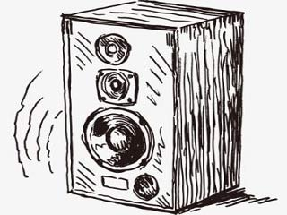

- C CAB
- D DAV
- F FOOM
- G GOOJ
- H HAUS
- K KAUS
- L LOJ
- M MIV
- N NOJ
- P PAJ
- Q QWJ
- R RIAM
- S SO
- T TEV
- V VAS
- X XOB
- Y YAWG
- Z ZAUM
- CH CHEB
- DH DHIA
- DL DL
- HL HLOOV
- HM HMOOB
- HN HNAV
- KH KHIAV
- ML MLOOG
- NC NCAWS
- NK NKOS
- NP NPUA
- NQ NQOS
- NR NROV 
- NT NTOV
- NY NYIAJ
- PH PHAJ
- PL PLAM
- QH QHIA
- RH RHO
- TH THOOB
- TS TSUJ

- TX TXAWJ
- XY XYA
- DLH DLH
- HML HMLUAV
- HNY HNYAV
- NCH NCHOS
- NDL NDLUA
- NKH NKHAUS
- NPH NPHOO
- NPL NPLAUM
- NQH NQHIS

- NRH NQHIAV
- NTH NTHUAV
- NTS NTSAB
- NTX NTXIAS
- PLH PLHU

- TSH TSHAIB
- TXH TXHIAJ
- NPLH NPLHAIB
- NTSH NTSHAI
- NTXH NTXHI